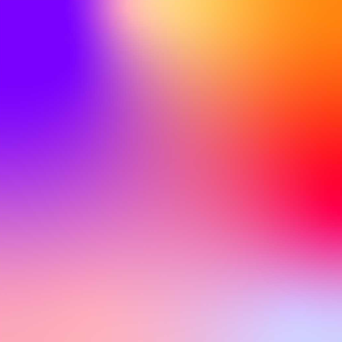
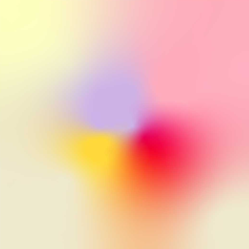

About me
Hi, I am first st year student of BSc Computer Science Course. I look to gain experience in photography,
programming, web and graphic design.
I am experienced in HTML, CSS, JS, Photoshop, Canva, Gimp, Premiere Pro, Java, C++ and Python.
First steps into career
text
Social Project "Pierwsi Z Pomoca"
I've also expanded my abilities while leading a "Pierwsi Z Pomoca" project about first aid. It was organized
as a part of the competition "Zwolnieni Z Teorii". I've developed a social campaign on creating content for
social media, which showcases both my design skills and my passion for continuing my own education. This has
helped me stay on top of the latest marketing trends and discover innovative ways to develop eye-catching
visuals. Moreover, I've enhanced my project and time management skills. Organizers of this competition
allowed me to receive Digital Skills Certificate issued by Google and Project Management Principles
Certificate issued by Project Management Institute ATP.
For the project I've used Canva to make graphics and posters,GIMP (similar app to Adobe Photoshop) to
correct and edit details, Discord and Excel for team management. My graphics were uploaded into Facebook,
Instagram and TikTok.
"Protolab Academy" start-up project
I've improved knowledge in the field of project management, startups, business, marketing and sharpening soft skills during 30 hours training program "Akademia ProtoLab" combined with a competition for an innovative startup project. I've learned practical usage of information while creating my own idea. My project was considered to be one of the highest quality and won contest, where, after many workshops, I aimed to create my own design/business concept
Photography passion
Photography is my passion. I enjoy it as my hobby. I have won 2 regional photography competitions "Wspomnienia Z Wakacji - Kwiaty Polskie" in 2020 and "Wspomnienia Z Wakacji - Kontrasty" 2021 both in Sokołów Małopolski, Poland. Moreover, my one photo was also selected to be in the calendar cover in national competition "Europejski Dzień Parków Narodowych" organized by Woliński National Park in January 2023.
Leadership and teamwork
I have participated in 3 Erasmus+ youth exchanges in Norway, Poland, and Latvia in diverse international group which may help me with facing clients. Moreover, I've been Scout Leader for half a year. I've organized classes for youngsters for example about first aid and trips. Also, I helped to create camp program. Furthermore, I've been children animator. I've encouraged children to deepen into science. I've showed them science equipment and experiments. My last job with children was at winter camp in 2023. I've been a camp counselor, where I was looking after 18 kids aged 7-12, preparing them activities and games. Since November 2021 I've started to work as a private tutor. I am giving lessons to 2 kids: 8 years old student in IT and 12 years old student in Physics and Maths.
My Work Experience
-

 Bartender
Bartender
Since II 2024
XI - XII 2023 -
Waitress
Since XII 2023 -
Telephone Customer Advisor
VII - IX 2023 -
Private Tutor in mathematics, physics and IT
XI 2021 - V 2023 -
Marketing Intern
XII 2022 - II 2023 -
Photography Passionate
Since 2020